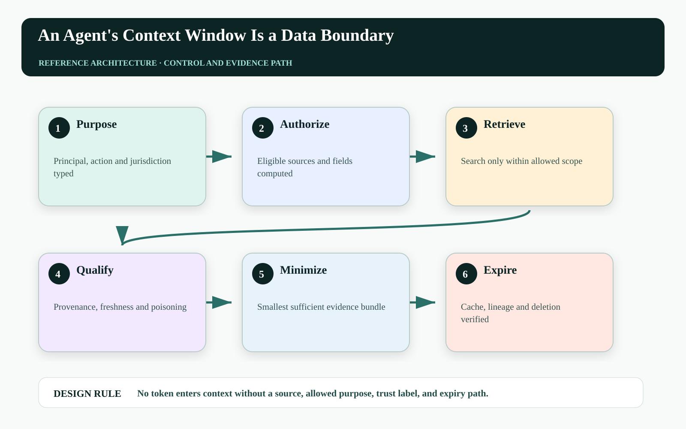
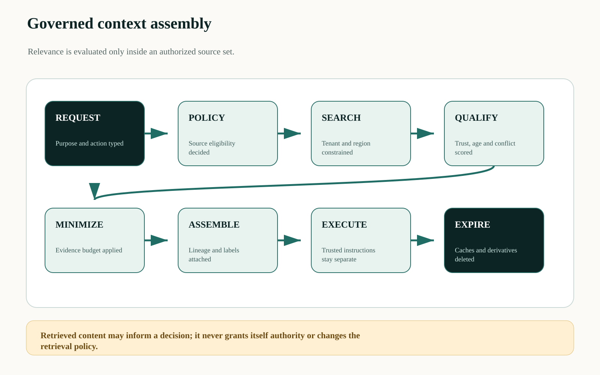
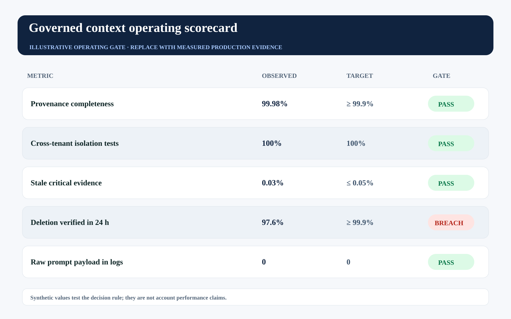

This is an editorial draft developed with AI writing and visualization assistance for human technical review before Medium publication. All incidents, thresholds, workloads, and operating values are illustrative unless a source is explicitly cited.
A context window is often drawn as an empty rectangle waiting to be filled. In an enterprise, every token placed inside it came from a system, a person, a jurisdiction, a retention policy, and a purpose that may or may not permit this use.
Retrieval quality therefore cannot be reduced to relevance. The context assembler must prove that the agent is allowed to use this specific data for this specific action, that the source is fresh and attributable, and that the prompt, cache, trace, and downstream provider do not silently become new retention systems.
Context is a governed, time-bounded data product assembled for one decision—not a bag of convenient text.

More relevant context can increase the wrong kind of accuracy#
A retriever can improve answer relevance by adding an old contract, another region's customer data, a private manager note, or a support transcript collected for a different purpose. The model may become more confident while the system becomes less defensible.
Context poisoning is also a governance problem. Retrieved instructions can attempt to redirect tools or exfiltrate data. The assembler must label content as evidence, not authority; isolate instructions; score trust and freshness; and prevent retrieved text from modifying policy or tool scope.
Put a context policy plane before retrieval#
The request first becomes a typed purpose, principal, action, resource, jurisdiction, and retention class. A policy decision computes eligible sources and fields. Retrieval runs only over that allowed set. A trust layer scores provenance, freshness, conflict, and poisoning signals before minimization selects the smallest sufficient evidence bundle.
The assembled context carries field-level lineage and expiry. The model receives tagged evidence and a separate trusted instruction channel. Caches use the same purpose and tenant partition. Telemetry stores digests and identifiers by default. A deletion ledger proves derived indexes and caches honored source deletion.

Optimize sufficient evidence under privacy constraints#
Context selection can be framed as a constrained set problem:
S* = argmin_S Σ_{d∈S} privacy_cost(d) + token_cost(d) + staleness_cost(d)
subject to: EvidenceCoverage(S) ≥ τ
allowed(d, purpose, principal, region) = true ∀ d∈S
trust(d) ≥ trust_minThe objective discourages copying everything ‘just in case.’ Coverage is defined over claims required for the action, not semantic similarity alone. Hard policy constraints are never traded away for relevance.
| Context field | Required control | Failure response |
|---|---|---|
| Source | Stable record ID + version | Exclude unattributed text |
| Purpose | Allowed-use decision | Deny or route to review |
| Trust | Provenance and poisoning label | Quarantine or down-rank |
| Freshness | Source-specific expiry | Re-fetch or mark unknown |
| Deletion | Derivative lineage | Purge and verify |
Make context items typed records#
A context item should arrive with governance metadata, not only text:
{
"record_id": "contract:MSA-771",
"version": "2026-06-14T09:21:00Z",
"purpose": ["renewal_risk_review"],
"tenant": "customer:A-1902",
"region": "IN",
"trust": {"provenance": "authoritative", "poisoning": "low"},
"valid_until": "2026-09-03T13:00:00Z",
"content_digest": "sha256:...",
"deletion_lineage": ["index:revops-v7", "cache:ctx-91"]
}The model can receive a rendered projection, but the control plane retains the record structure. Evidence citations resolve back to the exact source version, and deletion traverses the derivative lineage.
Measure context governance as an SLO#
Track unauthorized retrieval attempts, purpose-coverage, field minimization, stale-evidence rate, provenance completeness, poisoning quarantine, cross-tenant isolation tests, cache expiry, and deletion verification. Token utilization alone rewards the wrong behavior.
The synthetic gate shows strong provenance and isolation while deletion verification breaches. A system that removes a source but cannot prove derivative removal does not yet have a complete context lifecycle.

| Operating signal | Decision use | Failure interpretation |
|---|---|---|
| Unauthorized retrieval | Block action and investigate | Policy scope or tenant isolation failed |
| Provenance completeness | Prevent material decision | Evidence cannot be defended |
| Stale critical evidence | Re-fetch or reapprove | Decision moment is invalid |
| Deletion completion | Stop affected index/cache | Derived stores outlived source rights |
Failure-injection before production#
A design review cannot prove No token enters context without a source, allowed purpose, trust label, and expiry path. The pre-production harness must interrupt the system at the transitions where ownership, authority, evidence, and business state can disagree. The objective is not to maximize a generic pass rate. It is to demonstrate that every material fault produces a bounded state, a named owner, and an admissible recovery transition.
| Injected fault | Experiment | Required evidence |
|---|---|---|
| Delayed or reordered work | Pause the path after POLICY and release it after MINIMIZE | The stale path cannot manufacture terminal success |
| Authority becomes stale | Advance policy, mode, ownership, or resource version before effect commit | The final gateway rejects the old decision context |
| Evidence is missing or corrupted | Remove one authoritative observation or change its digest | The outcome remains violated, inconclusive, or owned—never guessed |
| Recovery itself fails | Interrupt compensation, handoff, or receipt closure | The action stays visible with an owner, deadline, and next legal transition |
Run the matrix at concurrency, with realistic dependency lag and with the same policy and gateway versions used in the candidate release. Report p95 and p99 resolution alongside the worst unresolved example. Averages can demonstrate throughput; they cannot erase a single material breach. Promotion should require replayable evidence for the controls, not a slide stating that the team considered the risk.
Three questions for the architecture review#
Where is truth decided? Name the authoritative source and the exact component permitted to advance the workflow into a terminal state. If the answer is ‘the agent interprets the tool response,’ the boundary is not yet independent.
Where is authority finally enforced? Follow the command through every queue, adapter, cache, provider, and downstream effect. A policy decision is useful only when the last material write boundary can reject a stale, changed, or excessive action.
What blocks promotion? Convert the scorecard into executable gates with owners and expiry. A breached tail metric must reduce scope, hold the cohort, or enter an approved exception path; it cannot remain decorative telemetry.
A practical implementation sequence#
1. Type one decision purpose. Name required claims, eligible sources, fields, region, and retention for a material workflow.
2. Separate evidence from instruction. Tag retrieved content and prevent it from changing policy, tools, or system prompts.
3. Prove deletion end to end. Delete a seeded source and verify indexes, caches, traces, and exported evidence honor the lineage.
Primary references and boundaries#
The NIST Privacy Framework provides a voluntary enterprise approach to identifying and managing privacy risk. The NIST AI RMF Core includes privacy-risk examination, documented context, and ongoing risk tracking. The context-record design here is an engineering proposal.
This article is not legal advice and does not assert that one metadata schema satisfies any jurisdiction. Data-protection, residency, employment, and sector requirements need qualified organizational review.
The operating conclusion#
The context window is not outside the data architecture. It is a temporary, high-consequence integration surface. Govern it with the same seriousness as a database view—plus stronger controls for purpose, instruction isolation, and derivative deletion.
Can you identify the source, allowed purpose, and deletion path for every material token your agent used?